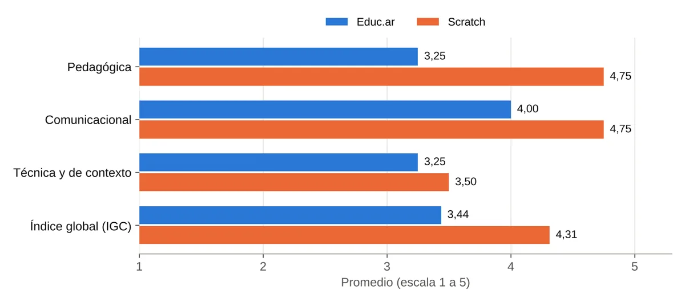
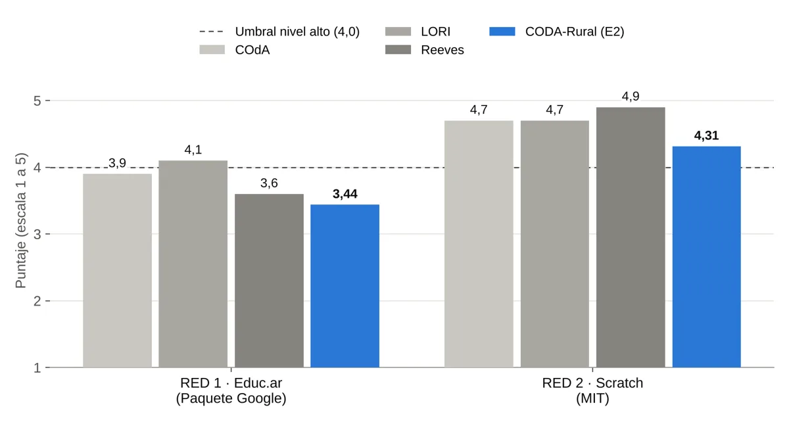
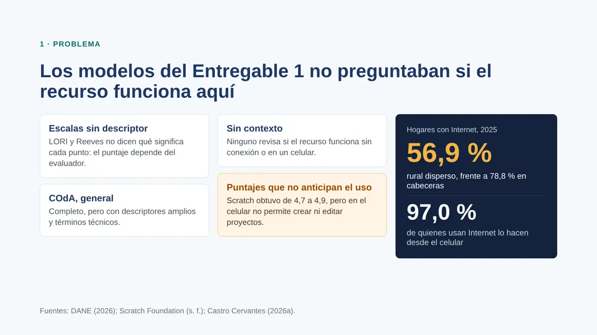
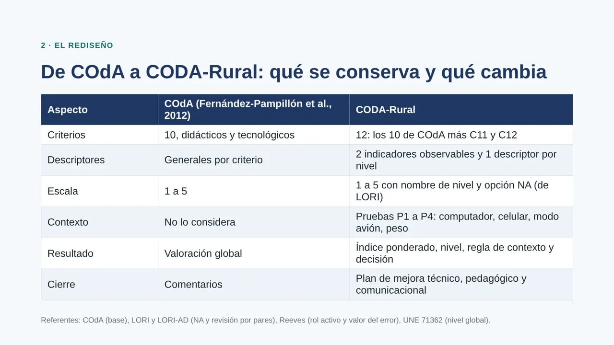
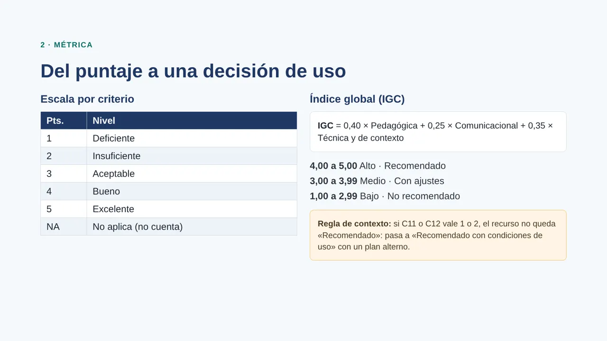
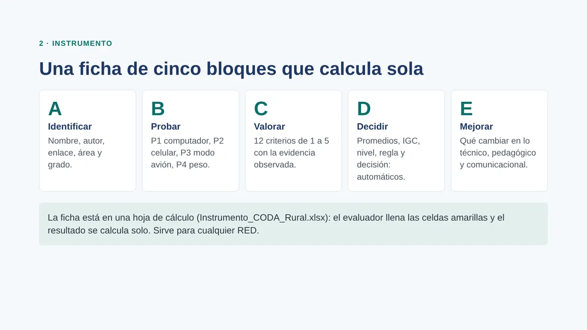
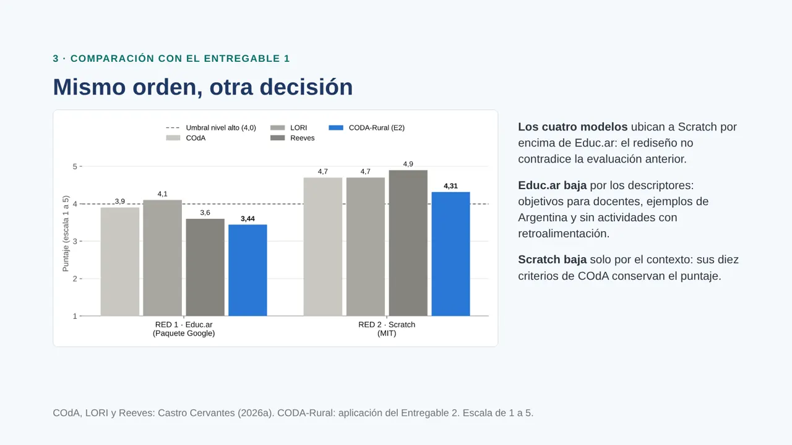
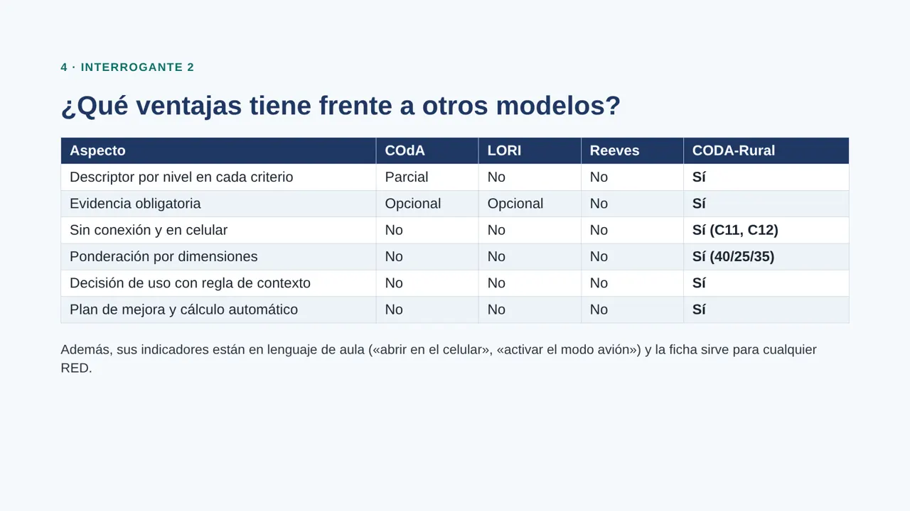
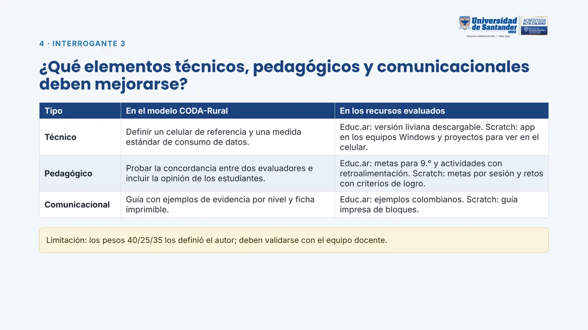
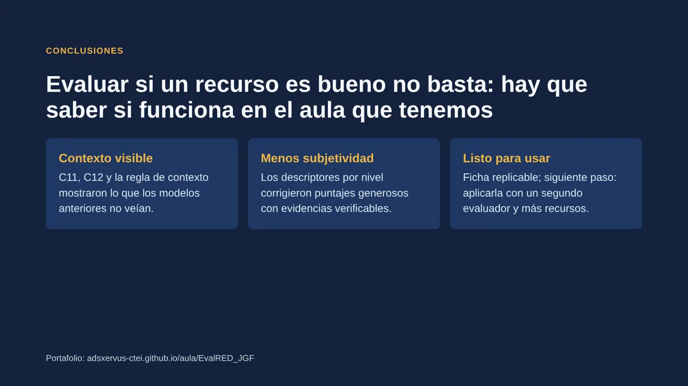

Resultados del modelo CODA-Rural
El instrumento rediseñado se aplicó a los mismos recursos del Entregable 1.
Educ.ar
Pedagógica 3,25Comunicacional 4,00Técnica y de contexto 3,25
Decisión: Recomendado con ajustes.
Scratch
Pedagógica 4,75Comunicacional 4,75Técnica y de contexto 3,50
Decisión: Recomendado con condiciones de uso (se activó la regla de contexto: C12 = 1).

Puntaje y evidencia por criterio
| Criterio | Educ.ar | Evidencia Educ.ar | Scratch | Evidencia Scratch |
|---|---|---|---|---|
| C1. Objetivos y coherencia didáctica | 4 | Declara qué se aprende (Gmail, Drive y Calendar), pero sus ejemplos se dirigen a la planificación docente; para 9.° hay que reformular las metas. | 4 | Es un entorno abierto: los tutoriales tienen metas, pero los objetivos de clase los define el docente. |
| C2. Calidad de los contenidos | 4 | Contenido correcto y de un portal oficial; los ejemplos son de Argentina y deben adaptarse al aula colombiana. | 5 | Entorno sólido, documentado y en uso internacional. |
| C3. Reflexión, crítica e innovación | 3 | Es un tutorial: el estudiante repite pasos (crear cuenta, enviar un correo, agendar), sin retos abiertos. | 5 | El estudiante crea juegos e historias propios, los comparte y los remezcla. |
| C4. Interactividad y retroalimentación | 2 | El visor permite avanzar por secciones y ampliar; no hay actividades con retroalimentación automática. | 5 | Cada bloque se ejecuta y el resultado se ve al instante en el escenario. |
| C5. Motivación | 4 | Útil para la vida escolar y laboral, pero sin reto ni juego. | 5 | Crear, jugar y compartir sostiene el interés. |
| C6. Formato y diseño | 4 | Pantallas ordenadas, con imágenes de la interfaz que apoyan los pasos. | 5 | Editor claro: escenario, objetos y bloques por colores. |
| C7. Usabilidad | 4 | Avance por secciones claro; se recorre sin ayuda. | 5 | Arrastrar y soltar; se usa solo desde el primer intento. |
| C8. Accesibilidad | 4 | En español y con opción de descarga como formato alternativo. | 4 | En español y con tutoriales en video y texto; depende mucho de lo visual. |
| C9. Reusabilidad y licencia | 4 | Licencia CC BY-NC-SA declarada; no ofrece archivo fuente editable. | 5 | Proyectos compartidos bajo licencia Creative Commons Compartir Igual; se remezclan. |
| C10. Interoperabilidad | 3 | Enlace estable y descarga; no está empaquetado en SCORM/IMS. | 4 | Exporta archivos .sb3 y los proyectos se pueden incrustar; no ofrece SCORM. |
| C11. Funcionamiento sin conexión | 3 | El contenido se descarga, pero practicar Gmail, Drive y Calendar exige conexión. | 4 | La aplicación de escritorio funciona sin conexión, pero solo en Windows y Mac (Scratch Foundation, s. f.). |
| C12. Funcionamiento en celular | 3 | Se consulta desde el navegador del celular, pero el visor está pensado para pantalla grande y las prácticas usan la versión web de las herramientas. | 1 | En el celular solo se pueden ver proyectos; no se pueden crear ni editar (Scratch Foundation, s. f.). |
Antes y después: comparación con el Entregable 1

Tabla criterio por criterio: COdA frente a CODA-Rural
| Criterio | Educ.ar COdA (E1) | Educ.ar CODA-Rural | Scratch COdA (E1) | Scratch CODA-Rural |
|---|---|---|---|---|
| C1. Objetivos y coherencia didáctica | 5 | 4 | 4 | 4 |
| C2. Calidad de los contenidos | 5 | 4 | 5 | 5 |
| C3. Reflexión, crítica e innovación | 3 | 3 | 5 | 5 |
| C4. Interactividad y retroalimentación | 3 | 2 | 5 | 5 |
| C5. Motivación | 4 | 4 | 5 | 5 |
| C6. Formato y diseño | 4 | 4 | 5 | 5 |
| C7. Usabilidad | 4 | 4 | 5 | 5 |
| C8. Accesibilidad | 4 | 4 | 4 | 4 |
| C9. Reusabilidad y licencia | 4 | 4 | 5 | 5 |
| C10. Interoperabilidad | 3 | 3 | 4 | 4 |
| C11. Funcionamiento sin conexión | — | 3 | — | 4 |
| C12. Funcionamiento en celular | — | 3 | — | 1 |
| Puntaje global | 3,9 | 3,44 | 4,7 | 4,31 |
Educ.ar baja por los nuevos descriptores: sus objetivos se dirigen a docentes, sus ejemplos son de Argentina y no tiene actividades con retroalimentación. Scratch baja solo por el contexto: conserva sus puntajes de COdA, pero en el celular no se pueden crear proyectos. Los cuatro modelos mantienen el mismo orden; CODA-Rural agrega en qué condiciones usar cada recurso.
Respuestas a los interrogantes
¿De qué manera el modelo rediseñado permite una adecuada evaluación de un RED?
Cada puntaje se apoya en una evidencia y en un descriptor escrito de antemano, así que otro docente puede verificarlo. Las pruebas de contexto comprueban el recurso en las condiciones reales del aula: así se detectó que Scratch no sirve para programar en el celular. Y la evaluación termina en una decisión de uso y un plan de mejora, no solo en un número.
¿Qué ventajas tiene frente a otros modelos?
| Aspecto | COdA | LORI | Reeves | CODA-Rural |
|---|---|---|---|---|
| Descriptor por nivel | Parcial | No | No | Sí |
| Evidencia obligatoria | Opcional | Opcional | No | Sí |
| Sin conexión y en celular | No | No | No | Sí |
| Ponderación por dimensiones | No | No | No | Sí |
| Decisión de uso | No | No | No | Sí |
| Plan de mejora y cálculo automático | No | No | No | Sí |
Además, sus indicadores están en lenguaje de aula y la ficha sirve para cualquier recurso.
¿Qué elementos técnicos, pedagógicos y comunicacionales deben mejorarse?
| Tipo | En el modelo | En los recursos |
|---|---|---|
| Técnico | Celular de referencia y medida estándar de consumo de datos. | Educ.ar: versión liviana descargable. Scratch: aplicación en los equipos y proyectos para ver en el celular. |
| Pedagógico | Probar la concordancia entre dos evaluadores; incluir la opinión de los estudiantes. | Educ.ar: metas para 9.° y actividades con retroalimentación. Scratch: metas por sesión y retos. |
| Comunicacional | Guía con ejemplos de evidencia por nivel y ficha imprimible. | Educ.ar: ejemplos colombianos. Scratch: guía impresa de bloques. |
Limitación: los pesos 40/25/35 los definió el autor y deben validarse con el equipo docente.
Presentación del informe de implementación
La presentación resume el informe: problema, modelo, aplicación, comparación y respuestas.













Descargar la presentación (PDF)Informe en el formato del curso (PDF)
Conclusiones
CODA-Rural hizo visible lo que los modelos anteriores no mostraban: un recurso excelente puede no funcionar en el aula que tenemos. Los descriptores por nivel redujeron la subjetividad y cada cambio quedó justificado con evidencia. El modelo está listo para usarse en la institución; el siguiente paso es aplicarlo con un segundo evaluador y más recursos del área.